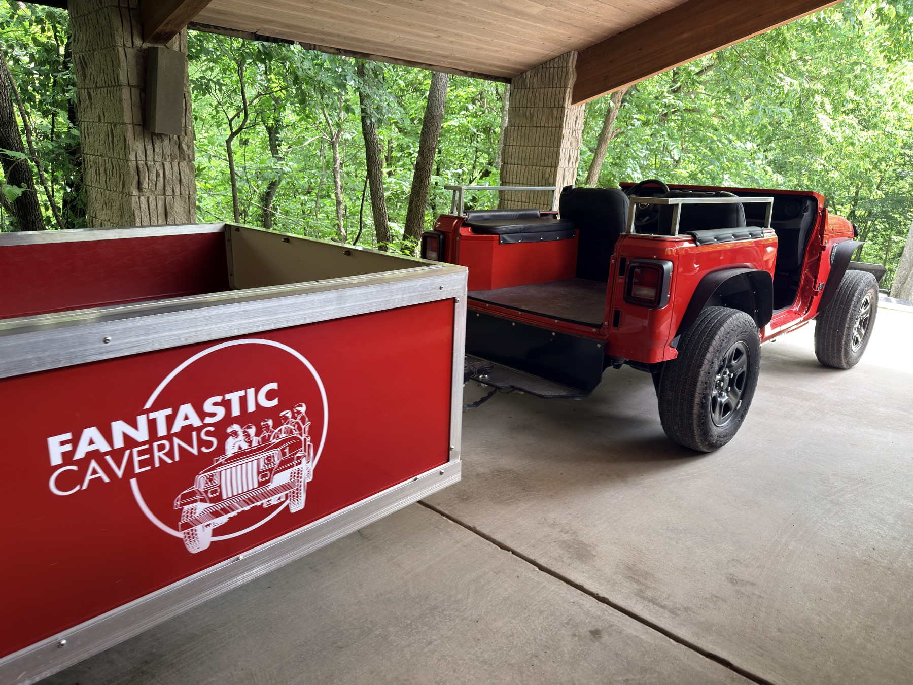
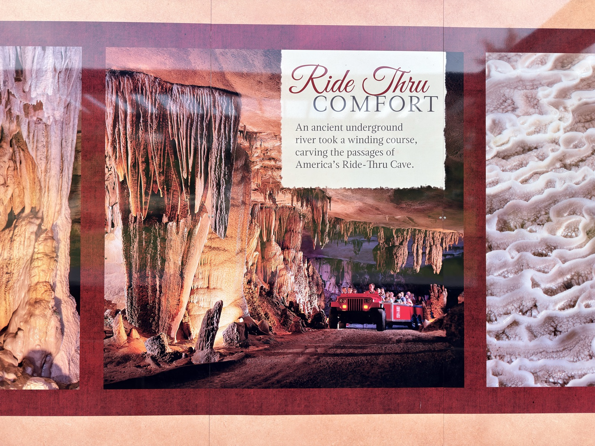
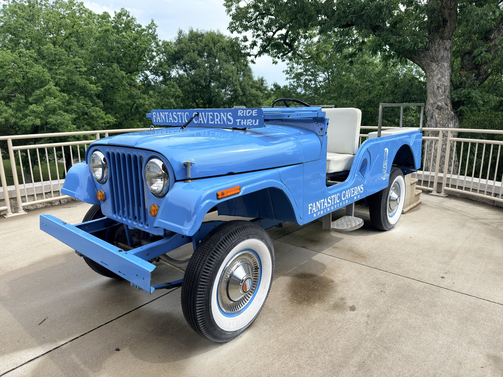
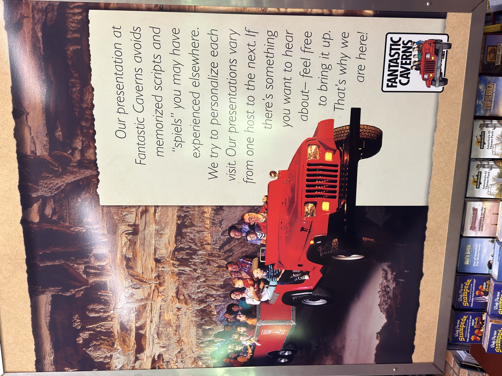
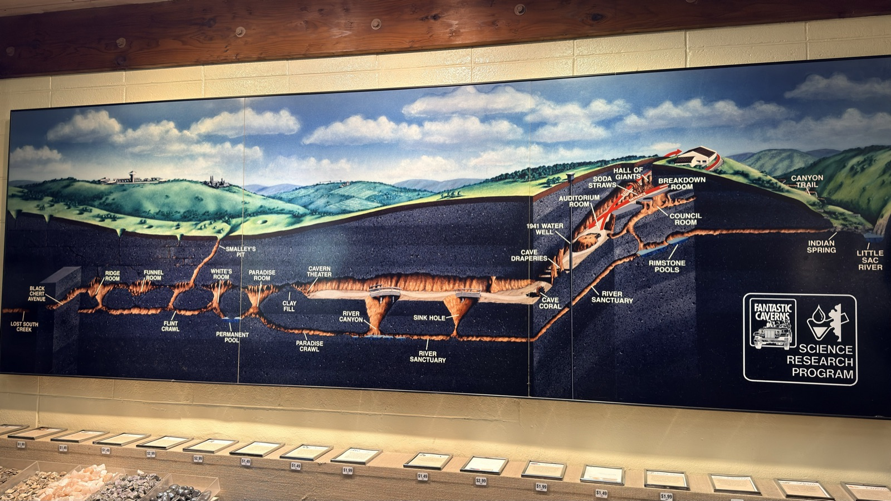
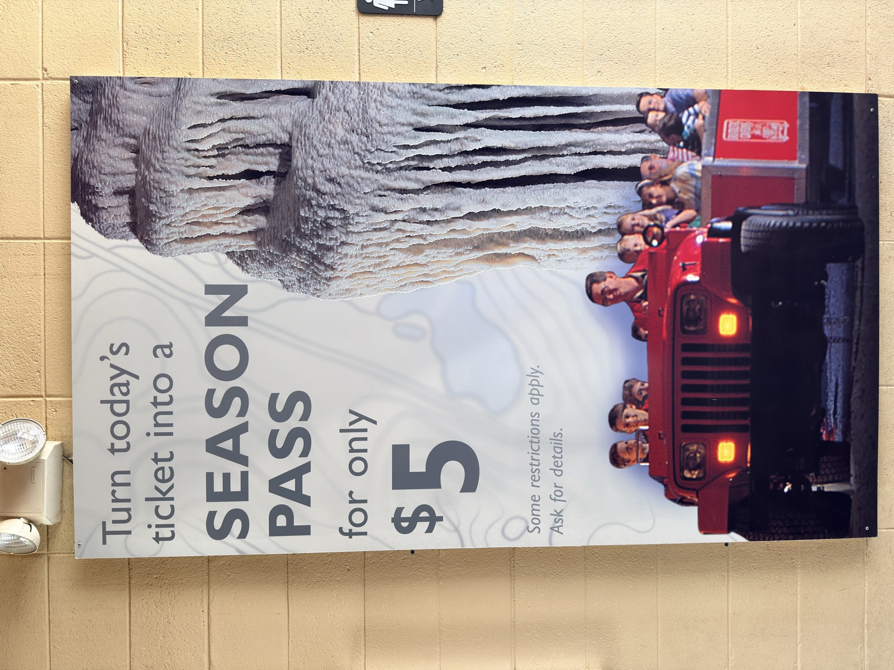

Cool in summer, mild in winter.
America's ride-through cave.
Explore a living Ozarks cavern from an open-air tram pulled by a Jeep. No stairs, no hiking, just a guided underground route through cool 60-degree chambers.
Open-air Jeep-drawn tram.
Today: every 30 minutes.
Ramps can support wheelchair loading.
Know when the next tour leaves.
The current site says when the last tour departs, but it does not make the departure cadence obvious. This prototype treats tour timing like a primary conversion detail and keeps the cadence editable for seasonal changes.
Departures
Every 30 minutes today
Observed onsite June 9, 2026. Confirm whether this cadence applies daily or seasonally.
The rare cave tour families can actually ride through.
Fantastic Caverns has a simple, memorable differentiator: guests see the cave from a tram instead of walking through it. This concept makes that the lead story, then ties it to accessibility, preservation, weather-proof planning, and the road-trip experience.
Ancient river passage
A one-mile underground route shaped by water and time.
Protected formations
The ride-through format keeps guests close to the scenery while reducing foot traffic near delicate cave features.
All-weather stop
A dependable plan for hot days, rainy days, Route 66 detours, and Branson-area trips.

What the onsite visit makes obvious.
Your visitor-center photos show several high-value messages that should be working harder online: the actual tram setup, the comfort promise, the guides' personality, cave science, and active return-visit offers.

Ride Proof
Show the vehicle before visitors wonder what “ride-through” means.
This photo answers a practical question instantly: guests ride in open tram cars pulled by a Jeep, from a covered loading area into the cave route.

Messaging
Use the language already working onsite.
“Ride Thru Comfort” is stronger than generic cave-tour copy because it connects comfort, access, and novelty in one phrase.

Arrival
Make the brand feel visible before checkout.
The blue Jeep is a distinctive arrival cue and a useful social-share image for search, maps, and family planning.

Guide Quality
Tell people the tour is hosted, not scripted.
The visitor-center panel says guides personalize the presentation. That is a real trust signal for families and school groups.

Education
Turn cave science into a planning reason.
The cave map makes the underground system easier to understand and supports a stronger school/group landing path.

Revenue
Surface active upgrade offers when they are current.
If this season-pass offer is active, the website should expose it near tickets and post-tour follow-up instead of only at the venue.
The answers visitors need before they park.
Tourist-location pages have to handle urgent mobile questions fast: hours, last departure, pricing, directions, accessibility, and whether it is worth stopping today.
2026 admission
- Adult
- $36
- Child, 6-12
- $18
- 5 and under
- Free
Group rates are available for 20 or more paid admissions with prior arrangement.
Hours
Open daily except Thanksgiving, Christmas Eve, and Christmas Day. Last tour departs one hour before closing.
Today's observed cadence: every 30 minutes.
Confirm today's scheduleLocation
4872 North Farm Road 125
Springfield, MO 65803
Contact
Questions, group visits, accessibility details, and same-day planning.
(417) 833‑2010Turn cave stewardship into a stronger education funnel.
The Cave Science Program gives Fantastic Caverns a credible school-and-group story: surface choices affect underground ecosystems. A redesigned site can promote that story to teachers, scout leaders, homeschool groups, and family planners.
Let review momentum work harder.
Fantastic Caverns already benefits from strong public review signals. The redesigned experience should move visitors between maps, social proof, and review actions without making them search.
A practical pitch: sell the stop before guests arrive.
Mobile conversion. Put hours, last departure, tickets, directions, call, accessibility, and weather-proof value above the fold.
Update control. Keep rates, hours, review links, and contact information in a small content file so seasonal details stay current.
Awareness loop. Tie Google Places, Tripadvisor, Yelp, Facebook, Pinterest, partner listings, and post-tour review prompts into one intentional flow.